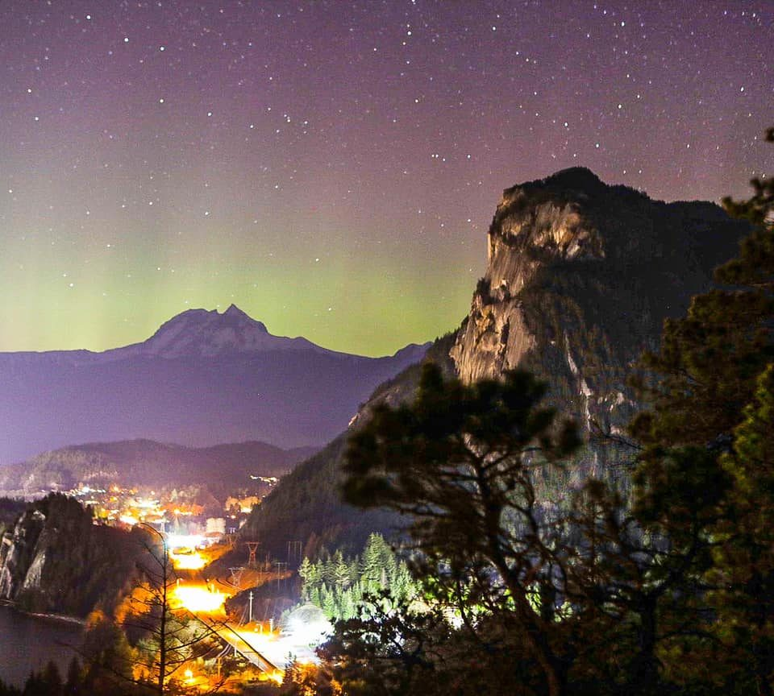

Squamish is known as the outdoor capital of Canada, and most of that reputation is built on rock, trails and snow. But the town sits at the head of a fjord, and there's a whole other way to see the mountains: from sea level, looking up.
The Stawamus Chief
The Chief is a huge granite monolith that rises roughly 700 metres straight out of the forest beside the highway. Most visitors see it from the parking lot or the trail. From the water, you see how it sits in the landscape: a pale wall above the dark forest, with the Sound stretching out beneath it. On a clear evening the granite glows orange.
The Chief is also a sacred place for the Squamish Nation, who have lived here since time immemorial. When you look up at it, you're looking at a landmark that holds deep meaning for the people of this territory.
The cliffs of the upper Sound
North of Porteau Cove the shoreline gets steep fast. Rock walls plunge into deep green water, and after rain, thin waterfalls slide down them straight into the fjord. These sea walls are one of the details that surprise people the most on a boat tour, since you can't see most of them from the highway.
Shannon Falls and the Sea to Sky skyline
Shannon Falls is one of the highest waterfalls in British Columbia and an easy stop right off the highway. From the Sound, the mountains around it frame the view, and on a clear day you can see the long snowy skyline of the Tantalus and Garibaldi ranges beyond.

Best time to go
- Morning: calm water and soft light on the east-facing walls.
- Late afternoon and evening: warm light on the granite and glowing sky behind you. See our sunset guide.
- After rain: waterfalls are at their best, and low cloud adds mood.
How to see it
The Howe Sound Wildlife Tour ($375 for up to 3 guests, 2-3 hours) covers the sea walls, waterfalls and wildlife of the upper Sound. The Half-Day Explorer ($625 for up to 3 guests, 4-5 hours) gives you time to go further, stop at coves and beaches and choose your own route. You can also explore on your own with a boat rental if you hold a PCOC.
Planning a longer visit? Read our guides to the Howe Sound islands and to the best boat tours from Squamish.
Frequently Asked Questions
How tall is the Stawamus Chief?
The Chief rises roughly 700 metres above the water of Howe Sound. It's one of the largest granite monoliths in the region and a world-famous climbing destination.
Can you see Shannon Falls from a boat?
On a clear day you can see the cliffs and mountain walls around the Squamish end of the Sound, and the area around the falls is one of the scenic highlights of the upper fjord. Most people also visit the falls by short walk from the highway.
Where do tours to see the Chief depart from?
Our trips start from Squamish or Porteau Cove depending on the itinerary. Call us and we'll suggest the best option for your date and group.
Plan Your Howe Sound Trip
A local captain, a private boat and the best of the fjord. Call (604) 849-8898 or get in touch to check dates.